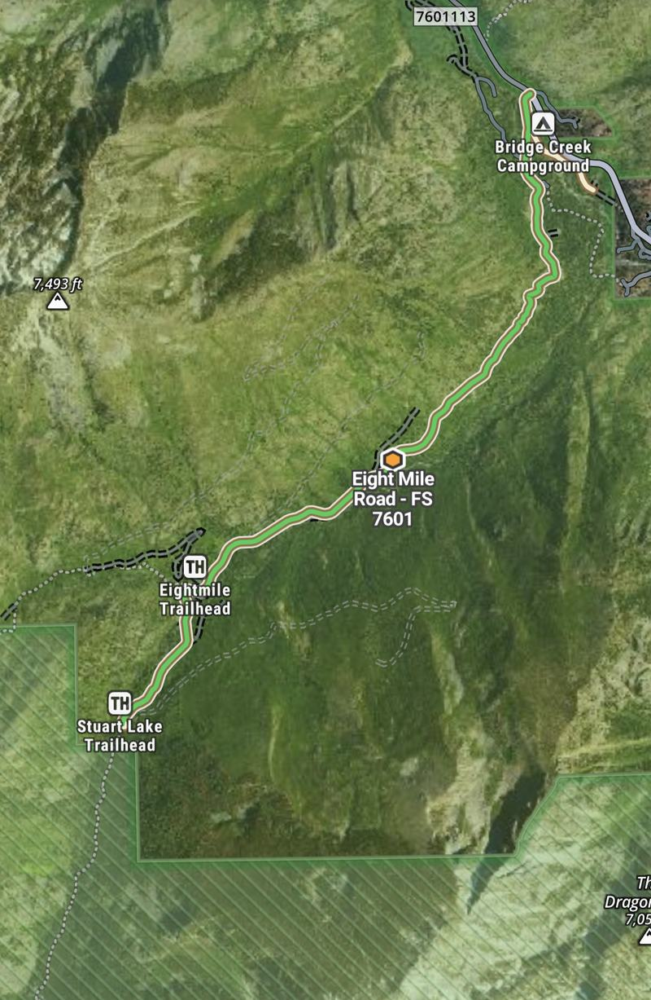
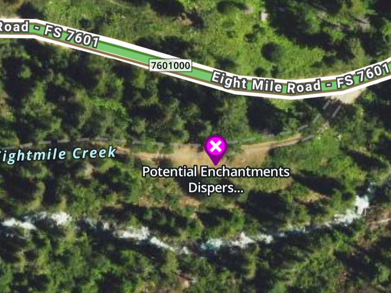

Dispersed basecamp · FS Road 7601 · Leavenworth, WA
Eightmile Road Basecamp
Tue Oct 13 – Fri Oct 16, 2026
Two dispersed camp spots on Forest Service Road 7601, used as a basecamp for Enchantments-area day hikes — Colchuck, Stuart, and Eightmile lakes.

The whole road at a glance. Bridge Creek Campground and the Icicle Road junction sit top right; FS 7601 climbs southwest from there past the Eightmile Trailhead to the Stuart/Colchuck Trailhead. Both camp spots are along this stretch — the lower one about 0.5 mi up from Bridge Creek, the upper about 0.6 mi below Eightmile TH — and each is pinned on the interactive map further down.
1. Trip overview
The plan: dispersed car camping on FS 7601 as a basecamp for Enchantments-area day hikes. No permit lottery, no reservation, no fee for the camping itself.
Dates: Tuesday Oct 13 through Friday Oct 16, 2026.
Getting there
From US-2 at the west end of Leavenworth, take Icicle Road about 8.4 mi and turn left onto FR 7601 at Bridge Creek Campground. Cross the Icicle Creek bridge and climb.
Eightmile Trailhead — about 3.1 mi up 7601.
Stuart/Colchuck Trailhead — about 3.8–4 mi up 7601, roughly 0.7–0.9 mi past Eightmile.
7601 is steep and badly washboarded. The Forest Service recommends high clearance, and engaging 4x4 if you have it. Take it slow; it beats up a low car.
2. The two camp sites
Primary
Upper 7601 Camp
47.54021, -120.80243

The pullout sits off the south side of 7601, between the road and Eightmile Creek.
Roughly 2.4 mi up 7601 (estimated from the coordinates) — about 0.6 mi below Eightmile TH and about 1.5 mi drive from the Stuart/Colchuck TH.
This is the well-known free “FS Road 7601 Dispersed” stretch: pull-offs with existing fire rings, creek access, no facilities of any kind. It sits outside the posted no-parking zone.
A clearing at the end of a short spur east of 7601 — well off the road, but still inside the posted mile 0.00–1.03 stretch.
Roughly 0.5 mi up 7601 from Bridge Creek CG.
⚠️ That places it inside the stretch covered by Forest Order 06-17-1991-221: no parking where signs are posted, from mile 0.00 to mile 1.03 (the junction with road 115).
WTA's notice that dispersed camping is not allowed between FR 7601 and Icicle Creek describes the narrow strip where the road runs along the creek, up by the Icicle Road junction. This clearing sits south and east of that, off the road and away from the water, so on the map it appears to fall outside that notice — though that is a reading of the map, not a ruling.
On arrival: the signs on the ground govern. Walk the pull-off and check for posted No Parking signs before you settle in. If any are up, move on past the road 115 junction.
Eightmile Trailhead (47.53601, -120.81401) is shown for reference. There are no verified coordinates for the Stuart/Colchuck Trailhead, so it is deliberately left off the map rather than guessed — it is roughly 0.7–0.9 mi further up 7601 from Eightmile.
Yes — camping on FS 7601 is allowed and free. The confusion comes from a nearby order that does not apply to this road.
The Icicle camping ban only prohibits camping between Icicle Creek and Icicle Road #7600, from Snow Lakes TH west to Rock Island CG, outside developed campgrounds. FR 7601 is a different road, up the other side of the creek, and is not covered.
Orders that actually apply
Order
What it says
Source
06-17-1995-285
No camping between Icicle Creek and Icicle Road #7600, Snow Lakes TH to Rock Island CG, outside developed campgrounds. Does not cover 7601.
Stage 1 restrictions were reinstated forest-wide on Sept 11, 2026. Under Stage 1, wood and charcoal fires are out at dispersed sites — but propane and other bottled-gas devices with a shut-off valve are still allowed, so the propane firepit and a gas stove are fine. Restrictions often come off after the first soaking autumn rain, so this may have lifted by mid-October anyway.
Open fires are never permitted on the Colchuck and Stuart Lake trails or at Eightmile Lake / Lake Caroline, restrictions or not.
Little Giant Fire closurere-check
Lightning-started July 15, 2026 in the Chiwawa River drainage, about 30 mi NW of Leavenworth, and mapped at roughly 171,000 acres. The closure order runs Sept 3 through Oct 31, 2026 unless rescinded, covering Chiwawa River Road 6200, Phelps Creek Road 6211, Entiat River Road 5100, and a long list of campgrounds and trails in that area.
It does not include Icicle Road or 7601, so it should not block this trip. But it is a big, active fire upwind of Leavenworth: expect the possibility of smoke, and re-check in case the closure area grows. A separate Pomas Fire closure and a storm-damaged roads closure are also active on the Wenatchee River district — worth a look before you drive out.
Road 7601 seasonal closurere-check
7601 closes to vehicles each winter to protect the roadbed, mid-fall through spring, with no fixed date — it closed Nov 4 in 2024. Mid-October is normally well inside the open season, but an early snow could change that. Confirm the week of the trip.
Hunting seasonre-check
Washington's modern-firearm general deer season for 2026 looks like Oct 17–31, with black-tailed deer running Oct 10–30 on the west side. If those hold, Oct 13–16 falls just before the east-side modern-firearm opener — but dates vary by species and game management unit, and archery, muzzleloader, and high-buck seasons can overlap. Verify against WDFW, and wear blaze orange around camp and on the forest roads regardless.
Mid-October generally
Cold nights, short days, and possible early snow at trailhead elevations of 3,300–3,400 ft. Water sources may be iced in the morning.
Daylight, Leavenworth WA — approximate, PDT
Date
Sunrise
Sunset
Daylight
Tue Oct 13
7:17 a.m.
6:20 p.m.
11.0 h
Wed Oct 14
7:19 a.m.
6:18 p.m.
11.0 h
Thu Oct 15
7:20 a.m.
6:16 p.m.
10.9 h
Fri Oct 16
7:22 a.m.
6:14 p.m.
10.9 h
Computed for the town, not the trailhead; ridges to the east and west will cut the usable light at both ends. A 12-mile day needs an early start.
5. Day-hike logistics
Permits
Day-use wilderness permits are free and self-issued at the trailhead. Overnight Enchantments permits are required May 15 – Oct 31, but day hikes do not need one.
Parking fee
$5 per vehicle per day, or a Northwest Forest Pass / America the Beautiful pass, displayed at the trailhead.
Parking rule
Between Eightmile TH and Stuart/Colchuck TH, park only on the right side of FR 7601. The Stuart TH lot fills early, even on weekdays — and Oct 13–16 is midweek, which helps.
Group size
Limit of 8.
🚫 No dogs on these trails
Dogs are prohibited on the Colchuck and Stuart Lake trails, throughout the Enchantment Permit Area, and between the 7601 trailhead and Windy Pass (Eightmile/Caroline). This applies to all pets except qualifying service dogs. Arrange care before you go.
Hikes — AllTrails figures, approximate
Hike
Distance RT
Gain
Colchuck Lake
~9.1 mi
~2,350 ft
Lake Stuart
~9 mi
—
Stuart + Colchuck combined
~12.3 mi
~3,030 ft
Eightmile Lake
~6.8 mi
—
Trip reports put Lake Stuart closer to 11 mi than the listed 9. Budget accordingly against 11 hours of daylight.
Chanterelles, if the rain has come
Half day · 25–30 min from camp
Where: stay on Icicle Road past the 7601 turn and carry on to the Chatter Creek (mile 16) and Rock Island (mile 17) campground stretch. Damp mixed conifer along the creek, old enough to have moss and deep duff. Roughly 10 minutes back down 7601, then 15 up Icicle.
What you're after: on this side of the crest the local prize is the white chanterelle (Cantharellus subalbidus) rather than the golden one — orange chanterelles are mostly a west-side find. Look for blunt forking ridges running down the stem instead of thin blade-like gills, solid flesh that tears like string cheese, and a faint smell of apricot.
Timing: mid-October sits inside the fall window, but they need rain to fruit. After a dry autumn, treat it as a walk in the woods that might produce dinner.re-check
Permit: a free Incidental Use Mushroom Information Sheet must be on you to pick for personal use. Collect one from the Leavenworth ranger station — closed Wednesdays. Personal use only; none of it may be sold.
Rules: no picking inside any closure area, and no driving off open roads to reach a patch.
Identification is on the picker. Do not eat anything you cannot positively confirm. A white chanterelle and a young white Amanita can look alike to an untrained eye, and that is not a mistake you get to make twice.
Take: a basket or mesh bag so the spores drop as you walk, a knife, and a brush.
6. Pre-trip checklist
7. Contacts
Wenatchee River Ranger District
600 Sherbourne St, Leavenworth, WA (509) 548-2550
Open Mon, Tue, Thu, Fri, 9–12 and 1–3:30. Closed Wednesdays and federal holidays.